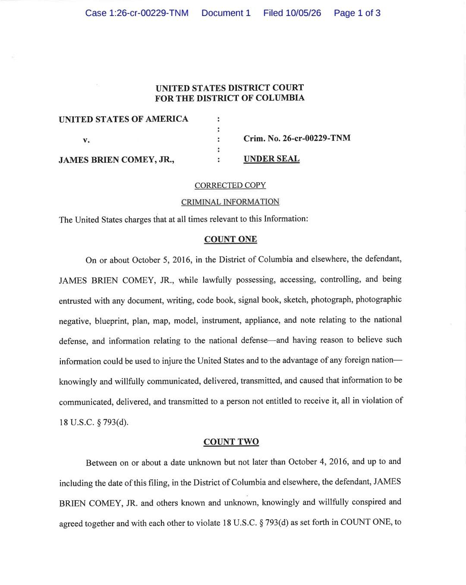
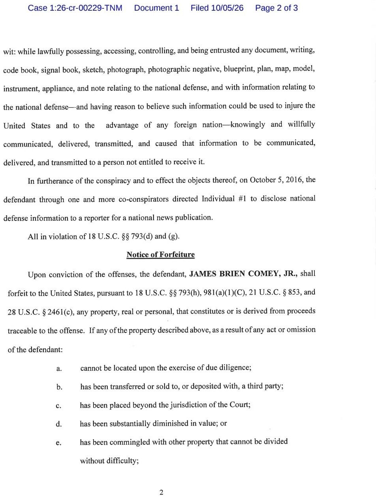
BREAKING: Former FBI Director James Comey has been charged with violating the Espionage Act for allegedly directing the disclosure of national defense information to a reporter in 2016. The case is assigned to Judge Trevor McFadden in Washington, D.C.
Payward, the parent company of Kraken, announced its intention to be the first CFTC-regulated deployer on HIP-3* markets. Payward will use Hyperliquid as the infrastructure layer to deploy perpetual futures markets for US clients. Subject to regulatory approval, Bitnomial, Payward’s CFTC-regulated DCM and DCO, would act as the HIP-3* deployer: creating, owning, and administering the markets and clearing and settling the contracts. If approved, NinjaTrader Clearing, Payward’s CFTC-registered FCM, would carry client accounts.
HIP-3 will support optional deployer configuration for permissioned markets in a future network upgrade. This set of additional deployer functionality is collectively called HIP-3*. At its core, HIP-3* activation involves an onchain allowlist managed by the deployer or its sub-deployers. The functionality is strictly additive to HIP-3; its use is optional and up to the deployer. Existing markets remain unchanged. The initial release is available on testnet, where specifications are preliminary and subject to change based on feedback.
Hyperliquid is a neutral infrastructure layer with the goal of supporting large parts of the financial system. HIP-3* gives deployers additional functionality to operate deployments consistent with the requirements applicable to them. As with HIP-3, HIP-3* deployers are independent operators who use Hyperliquid as the onchain infrastructure layer for their own markets, while retaining control and responsibility over their deployment.
What were the biggest takeaways from Sibos 2026?
Nearly 11,000 delegates came together to discuss the future of payments, digital assets and AI. One message stood out throughout the week: the industry is moving from ambition and experimentation to implementation and scale.
Our four key takeaways:
- Better customer experiences will define the future of cross-border payments - Tokenised value is moving towards an interoperable financial system - AI is increasing the importance of trust and resilience - Progress depends on industry-wide collaboration
Read our reflections: https://t.co/sj3d8iyxUM
#CrossBorderPayments #DigitalAssets #AI
The OCC wants community banks to help shape the future of payments and is encouraging the development of payment stablecoin capabilities within the community banking sector. Interested community banks are encouraged to consider applying to become, or for a subsidiary to become, a permitted payment stablecoin issuer, as applicable. These opportunities complement the OCC’s Community Bank Comeback initiatives to right-size regulation and tailor supervision so community banks can grow, compete, and continue serving their communities.
The financial system is shifting from traditional bank accounts to wallets that can be embedded anywhere, but for this to work at scale, full interoperability is required.
At @money2020 today, our Head of Digital Assets, Luca Cosentino, discussed how we’re already working toward that future and enabling 24/7 settlement by supporting USDC and partnering with @Ripple to integrate RLUSD into our banking infrastructure.
This is what building the financial infrastructure for a more connected world looks like.
📣 Today NCA submitted comments to @USTreasury on its proposed GENIUS Act rules for payment stablecoins.
Stablecoins are becoming part of everyday life for consumers and businesses. Our comments focus on protecting holders as the new rules take effect: giving them time to redeem, sell, or convert their stablecoins if their legal status changes, making sure stolen funds could be returned to victims, and keeping self-custody and peer-to-peer transfers protected.
Read the full letter 👇
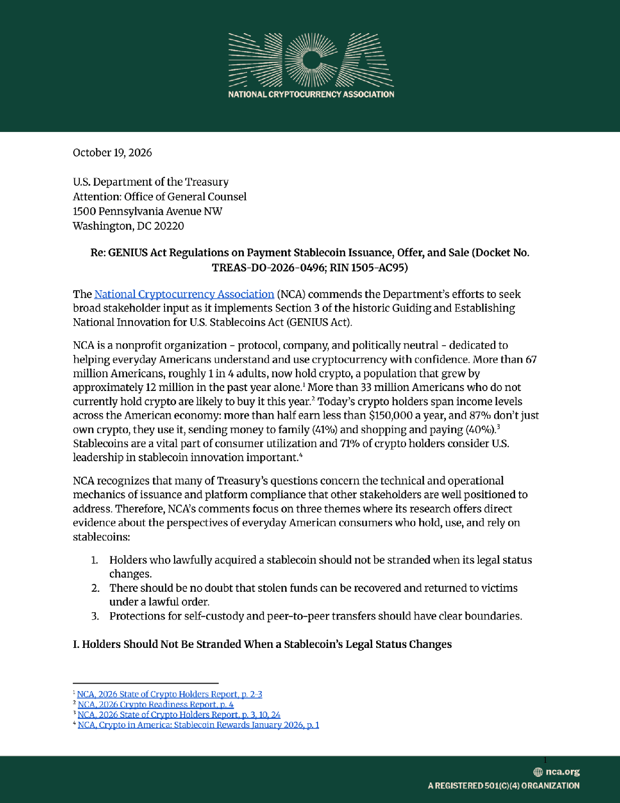
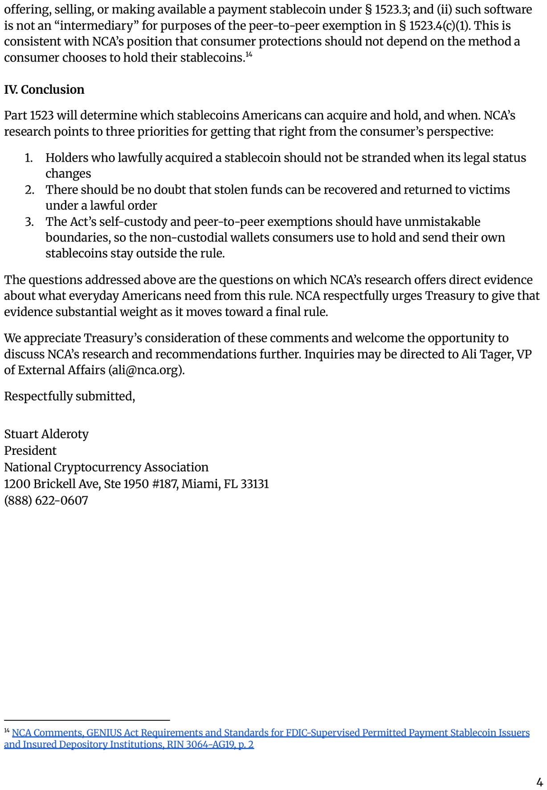
AI agents can find what they need. Now they can pay for it, too.
Today at @Cloudflare Connect, Mastercard showed how Agent Pay for Machines lets an AI agent find and pay for digital services on behalf of a business, while sticking to the budget and rules that business sets.
Following pilots with @Cloudflare, @Ant_Intl , @BVNKFinance, @AIsaOneHQ, @coinbase, @base and @hypepartners, we're opening Agent Pay for Machines Early Access.
Now we want developers to put it to the test. 👇
▶ Watch on X.@USComptroller Jonathan V. Gould: Today’s final rule advances @POTUS Trump’s and @SecScottBessent’s vision for American leadership in digital assets. We are providing a clear, practical framework for payment stablecoin innovation, with strong standards for reserve backing, redemption, and risk management. The OCC is drawing on its longstanding supervisory expertise to support responsible growth and innovation for this new industry.
1/ Today Ripple filed its comment letter on the SEC’s proposed Regulation Crypto Assets. We support the proposal, and the SEC has clear authority to adopt it. 2/ Years of “case by case, coin by coin” enforcement has pushed innovation offshore. We need holistic rules for digital assets. 3/ The proposal stays faithful to Howey. The investment contract is the security, not the token. What matters is what an issuer actually promised and when those promises end, not a subjective “decentralization” test. 4/ We know the cost of ambiguity firsthand. Ripple spent more than $150 million to get clarity. No company should have to do that to learn what the law requires. 5/ Clear rules grounded in existing law will bring capital, investor protection and innovation to the U.S. Read our full letter:
Super intelligence is poised to transform our financial markets.
Through the @CFTC's inaugural Frontier Forum, we are bringing together leaders at the intersection of technology and finance to explore the opportunities and risks of super intelligence and help shape the next frontier of American financial innovation.
Read more about our first Frontier Forum on October 28:
President Trump fundamentally transformed the future of finance with the signing of the GENIUS Act last year.
Today, U.S. Treasury’s @USOCC took a critical step toward implementing this historic legislation with the release of a final rule that delivers a federal framework for payment stablecoins that further cements American dominance in digital assets.
▶ Watch on XAmerica cannot lead on the new frontier of finance with outdated and anachronistic regulations that force economic activity offshore.
That’s why the @CFTC proposed a pathway for crypto exchanges to opt in to a federal regulatory framework designed for national markets, with robust customer protections and clear rules for margin trading. @Bankless
▶ Watch on XBig news as Aviva Investors announces the launch of a tokenized share class of the Aviva Investors Sterling (GBP) Liquidity Fund on the XRP Ledger.
The Sterling (GBP) Liquidity Fund is Aviva Investors’ largest fund at around £22 billion in assets under management, and this move marks an expansion of Aviva Investors’ tokenised fund offering, following the launch of its tokenized USD Liquidity Fund in July.
Investors receive the same protections as those in the conventional fund, which was initially launched in 2002.
Markets are moving to 24/7 access and real-time settlement. This is what that looks like in practice.
For professional investors only. Capital at risk.
⚡️ LATEST: Mastercard introduces Stablecoin Security to help financial institutions detect fraud, scams and sanctions risks in stablecoin payments, with global availability expected in 2027.
LATEST: 🇰🇷 Chainlink and LG CNS announced a partnership to integrate Chainlink's oracle and cross-chain infrastructure into LG CNS's digital asset platform for Korean institutions.
The GENIUS Act marks a watershed moment in American finance, further cementing the United States as the crypto capital of the world. Just as President Abraham Lincoln’s National Currency Act of 1863 established a national framework for bank-issued currency, the GENIUS Act establishes a federal framework for payment stablecoins in the digital age.
The @USOCC's final rule carries that landmark legislation forward, providing a clear, practical foundation for private-sector innovation, competition, and American leadership in digital assets.
JUST IN: 🇺🇸 JPMorgan predicts Bitcoin will outperform US stocks, gold, and real estate over the next 10 years.
Big news heading into @RippleSwell: the @USOCC has granted final approval for Ripple National Trust Bank.
This gives Ripple a federally supervised platform to support $RLUSD and provide digital asset custody to enterprises.
We’ve always said crypto and banks work better together — this is what that looks like. Real innovation, real accountability, federal oversight.
The revolution isn't happening outside the system. It's happening from within it.
Corporate treasury is going always-on. 🌐
Today, we're introducing new Ripple Treasury capabilities that bring together AI-powered automation, liquidity management, and digital asset infrastructure to help businesses manage and move money around the clock.
More on what's new: https://ripple.com/ripple-press/ripple-treasury-introduces-always-on-corporate-treasury-platform-to-modernize-corporate-cash-management/
Settlement liquidity is exactly the kind of use case @XRP Ledger and RLUSD are built to support.
@Arf_One is bringing its approach to settlement liquidity to the XRP Ledger, using RLUSD to support short-term working capital for licensed payment companies as cross-border payments settle.
🚨NEW: OCC Finalizes GENIUS Act Rules, Backs Off Stablecoin Rewards Restrictions
The @USOCC has finalized its GENIUS Act rules, dropping proposed restrictions on stablecoin rewards and leaving a major fight between banks and crypto firms unresolved.
Will Quantum break crypto?
Nope. @Perkinscr97, Head of Franklin Crypto, says it will *accelerate* the world onchain.
via @FortuneMagazine
Mastercard opens early access to AI agent payments following pilots with Coinbase, Base and Cloudflare
JUST IN: 🇨🇭 Switzerland officially approves its first spot Bitcoin ETF for retail investors.
JUST IN: Visa to acquire crypto infrastructure firm Fireblocks
Q3 Shareholder Update → https://t.co/u0UcDOuMNa
Highlights – FSD Supervised attach rate grew to over 75% of new vehicle deliveries in NA
– Unveiled the next-gen Roadster
– Record deliveries in Canada, Australia, Japan & Taiwan
– Tesla Semi now in volume production. Top variant can go up to 500 miles at a full 82,000 lbs while achieving efficiency of 1.7 kWh/mile – about a third of the energy a comparable diesel truck burns for the same load
– Ended the quarter with the largest backlog for our passenger vehicles in 4 years!
FSD Supervised – 4 new approvals since Q2 (Croatia, Slovenia, Czech Republic, Slovakia) – FSD is now live in nine EU countries & used by over 100,000 customers logging more than 160 million kilometers since initial approval
Robotaxi – Deployed Cybercab into our Austin fleet – Hit nearly 2 million cumulative unsupervised miles, 8x growth in the quarter – Austin service now runs 6 am to midnight, with wait times continuing to come down as we add cars & improve the orchestration algorithms – Added Grok to Cybercab with Grok Bot & Connectors, letting you interface with your inbox, calendar, files, chats and tasks, all by voice.
Transport, office & living room in one
Robotics – Started production of @Tesla_Optimus on our high-volume lines in Fremont. These are the first production-quality bots we've built, proving that the current manufacturing process for Optimus is suitable for a commercial product
SI Compute – On track for 400 MW of training compute by year end, feeding both vehicle & humanoid autonomy – Austin Fab construction continues, equipment commissioning planned for 2027
Battery – Battery supply is still the limiter on how fast we ramp vehicles globally, so we're expanding on every front: pack capacity in Berlin, cathode and lithium refining in Texas, LFP cells in Nevada – Shipped the first Megapacks built entirely with our own LFP cells – Increasing 4680 output to support ramp of Cybercab, Semi & Model Y
Energy – Megafactory Texas is up & running, with Megapack 3 production started – Highest-ever order rate & backlog for energy storage
Grid constraints & power availability are making Megapack the answer for SI infrastructure demand: it excels at supplying large data center loads, smooths out demand spikes, helps new projects meet grid connection rules & makes the grid itself more stable
All with less local fossil fuel generation
Supporting Infrastructure – Added 2,100+ net new Supercharger stalls, up 14% year over year
BREAKING: Anthropic officially files its S-1 registration statement for an IPO, seeking to list on the Nasdaq under the ticker symbol $ANT.
FULL SUMMARY OF ANTHROPIC'S S-1 FILING:
1. Anthropic posted H1 2026 revenue of $16.3 billion with a net loss of $80.7 billion
2. Anthropic says it does not expect to pay a dividend "in the foreseeable future"
3. Expects to spend up to $120.5 billion on SpaceXAI and Nvidia compute
4. Expects to spend up to $114.5 billion with Google through 2033
5. Revenue growth rate "may not be sustainable" and "may decrease"
6. May be required to seek additional financing "sooner than expected"
7. 5% of Anthropic's shares will go to the "Anthropic Public Benefit Fund"
8. S-1 includes warnings of AI's "catastrophic existential risks to humanity"
Markets currently expect Anthropic to raise as much as $100 billion at a valuation of ~$2 trillion.
The company is reportedly targeting an IPO in the week of November 16th.
The U.S. economy is expanding thanks to @POTUS’ proactive trade policies, deregulation, and pro-growth provisions in the Working Families Tax Cuts.
Revised GDP data show stronger growth in Q1 and Q2 of 2026, driven in part by greater consumer spending and investment. Forecasters expect that momentum to build in Q3.
The Trump Administration is delivering on its promises by restoring durable growth, unleashing investment, and powering the reindustrialization of the American economy.
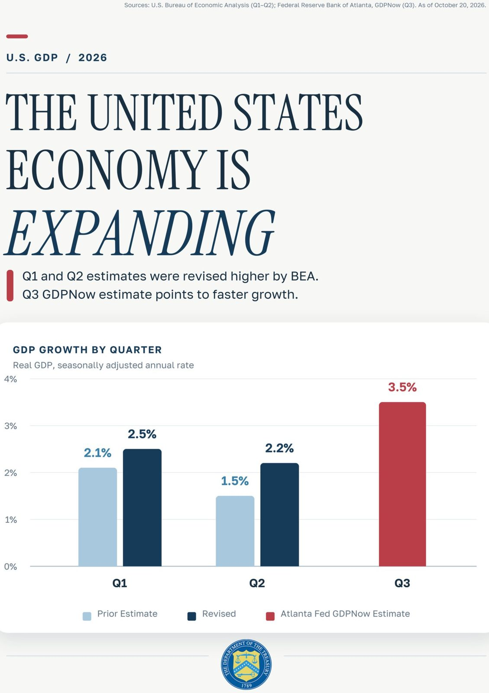
BREAKING: SpaceX posted its first quarterly profit as a public company on Tuesday with revenue more than doubling, driven by its artificial intelligence business
- Revenue: $14.6 billion, up 161% year-over-year.
- Net Profit: $4.4 billion, compared with a $1.1 billion loss a year earlier.
- AI Business: Super Intelligence revenue surged to $7.6 billion, up from $813 million.
- Starlink: Reached 13.6 million subscribers, with connectivity revenue rising 69% to $5.2 billion.
Trump Accounts may soon be expanded even more to anyone under 40yrs old. That would be another 100 million people, on top of the 70 million kids and 3.5mil babies born each year. This according to Brad Gerstner who is the main guy spearheading efforts on this. He also said Elon is 'tip of iceberg' Nice scoop and piece on it from @LydiaMoynihan @nypost
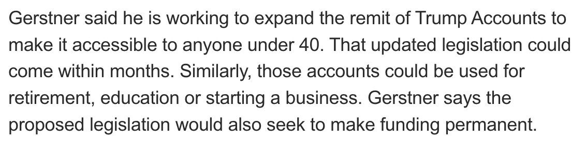
Our latest World Economic Outlook reveals that economies benefiting from the AI boom are faring well, while many energy-importing & lower-income nations face a more challenging environment. Policies must rebuild buffers. Read more: https://www.imf.org/en/publications/weo/issues/2026/10/13/world-economic-outlook-october-2026
BREAKING: Elon Musk says debt markets have “almost entirely shut off” access to money for any company without substantial revenue independent of AI data centers.
Neoclouds are going to see “guppy-level death and consolidation,” Musk says.
In today's edition of "LNG export critics are wrong about prices," let's take a look at actual natural gas prices.
Europe? Soaring.
Asia? Soaring.
U.S. (largest LNG exporter in the world)? Stable.
Gold just overtook U.S. Treasuries as the single largest asset in global central bank reserves. First time since the mid-1990s.
https://t.co/KGdi5Y30Un
Pending home sales in the US just hit an all-time low…
Lower than the 2008 financial crisis. Lower than COVID.
Absolutely insane.
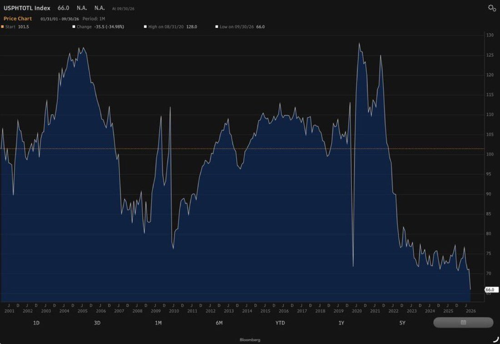
I’m pleased the @CFTC and @NBA have signed an MOU continuing the Commission’s commitment to increasing data sharing between the agency and professional sports leagues. The NBA joins the @MLB and @NHL in taking a responsible step toward protecting sports integrity and market participants from abuses in prediction markets like insider trading and fraud.
I thank NBA Commissioner Adam Silver for putting the integrity of professional basketball and America’s financial markets first and for working with the agency on this MOU.
JUST IN: Claude AI developer Anthropic officially files for IPO under ticker $ANT.
As crazy as this sounds, $1T in SpaceX revenue in 2028 is no longer impossible
Under President Trump, this Administration continues to restore the path to affordable homeownership for millions of young and working families. Treasury is working to ensure American families and workers have a fair shot at purchasing homes in their communities by increasing housing supply and limiting large institutional investors’ role in the market, while supporting a strong, stable housing market and avoiding unnecessary disruption.
We’re expanding access to the IPO market, so that more of our customers can participate. Starting today, October 19, we’re reducing the eligibility minimum to participate in IPOs, Follow Ons and Secondary offerings to $25,000 in retail assets (e.g., brokerage accounts, etc.). Learn more or sign up for alerts: https://www.fidelity.com/stock-trading/ipos
BREAKING: America’s $1.7 trillion auto loan market is headed for a crash, per Reuters.
Auto loans are now one of the biggest sources of household debt, bigger than credit cards.
And the strain is showing: 1 in 5 Americans is behind on at least one loan, the highest since 2010, and the average car on the road is now nearly 13 years old, a record.
Elon Musk said SpaceX and Tesla have formed special committees to explore a potential merger, a preliminary step toward what would rank as the largest corporate tie-up of all time
Next year, I will give one of my SpaceX shares to every kid in America.
This will be the first of many.
.@CFTC and National Basketball Association Sign MOU to Protect Integrity in Professional Basketball:
The value of Terafab’s output will place it in the top 20 of country GDP in a single building
Our latest model advances bring stronger capabilities for building and migrating software in low-resource programming languages such as COBOL, Fortran, and Visual Basic.
These languages power software that banks, governments, and businesses depend on. Progress here means understanding decades of business logic and helping developers modernize those systems while preserving what works.
We’re building these capabilities around the challenges developers and enterprise customers bring us. If your team is working on these systems, tell us which languages and workflows we should tackle next.
SCOOP: Major U.S. banks are detecting unauthorized third-party AI agents inside customer accounts, including some attempting to take actions that appear to be independent of user instructions, sources told Axios.
The findings have alarmed banking executives, who are racing to restrict access to their systems as AI moves at a velocity faster than financial institutions can respond, multiple industry and bank executives told Axios.
Several banks are now preparing for worst-case and even “day after” scenarios, including how to rapidly secure or restore customer accounts if things go wrong, the people said.
Several bank executives told Axios they're struggling to distinguish between human users and AI agents. One executive said banks also struggle to determine whether agents are authorized by customers or potentially operating without their permission, more akin to rogue agent behavior.
Read my latest for Axios here:
Websites are files on a computer. When you view a website, you are asking the computer to send you the files, then your browser shows them to you.
70% of the websites you see use PHP to make them interactive. So you can send things to the website too and it can respond. E.g. filling in a comment box and hitting 'post' adds the comment as a row to a spreadsheet.
PHP has a flaw in its code that allows anyone to gain control of the computer that has the website on it.
The organisation that provides PHP announced the vulnerability before a patch was available, meaning we're in a window where everyone knows about it (including baddies) but the good guys don't have an official solution.
Some are just turning off their websites and waiting for the solution. Others are trying to fix it themselves. General chaos and lots of stressed techies across literally the entire planet because this affects the entire internet.
Purdue University's IDEAS Lab built an autonomous drone that tracks runners through dense forests completely without GPS or cloud networks.
By running 3D LiDAR mapping and obstacle-avoidance AI entirely on-chip, it can weave under tree canopies and predict target movement through blind spots in real time.
Massive implications for next-gen search & rescue and edge AI.
▶ Watch on XLast month, we demonstrated high-rate alchemy: turning mercury into real, stable gold, beating CERN’s record by a factor of 10.
Last week, we enriched isotopes in the world’s most powerful plasma centrifuge, beating the Soviet record that stood for 40 years.
Now, we’re building a fusion reactor in San Francisco to achieve record power density.
▶ Watch on XWe recommend Cisco users disable the Smart Install (SMI) auto-loading feature on all NSS and DIB network devices to mitigate exploitation by remote attackers. Have you taken this action? Read more: https://media.defense.gov/2019/Jul/16/2002157833/-1/-1/0/CSA-CISCO-SMART-INSTALL-PROTOCOL-MISUSE.PDF #CybersecurityAwarenessMonth
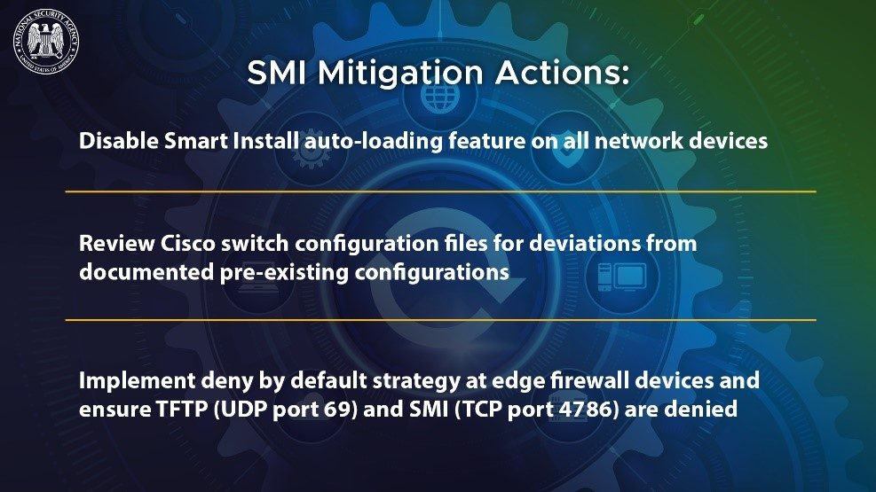
Super Intelligence Force Chair Jay Clayton on the White House Accord on Super Intelligence: “The President was like, ‘Hey, you guys are coming together. You have this four-part plan for the Super Intelligence Accord, for ensuring safety for the American people. That is a good step that we can take right now.’”
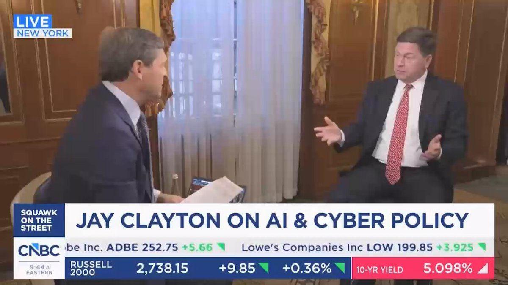
▶ Watch on XIn 2025, we published a bold proposal to use fusion reactors for gold production.
And now we’ve done it: Mercury transmuted into stable gold, using fusion neutrons, at 10x the record set by CERN in 2025.
We’ve reduced alchemy to a series of difficult but tractable engineering problems.
📡#SpaceForce electromagnetic warfare systems are protecting American troops and degrading enemy satellites around the world.🛰️
Learn more about how our systems work and see how USSF #Guardians support operations during war. https://www.youtube.com/watch?v=DMXtPMDJP-4
JUST IN: Florida becomes home to America's first flying police vehicle, as Florida Polytechnic debuts a manned electric aircraft for surveillance & emergency response.
Starfall enables affordable, routine access to a microgravity environment, providing unique opportunities for on-orbit manufacturing, scientific research, and testing
Falcon 9 launches the Bandwagon-5 rideshare mission to orbit from Florida
BREAKING: Government websites across Europe and beyond were taken offline on Wednesday after the discovery of severe flaws in PHP.
- FINLAND SHUTS STATE INTERNET SERVICES OVER PHP FLAWS
- NETHERLANDS CYBERSECURITY AGENCY TAKES WEBSITE OFFLINE OVER PHP FLAWS
- FRANCE TEMPORARILY TAKES PREFECTURE WEBSITES OFFLINE PENDING PHP FIX
New on our Science Blog: designing protein binders against scorpion neurotoxins.
Scorpions sting about 1.2m people every year, and antivenoms are often costly or in short supply. Claude has made an early step toward finding new treatments.
Vulnerabilities in a programming language that supports much of the internet are so severe that European and British authorities recommend websites temporarily go offline until they can be fixed.
JUST IN: Elon Musk reveals Tesla is building an “Optimus Academy” where thousands of humanoid robots will practice real-world tasks, learning from their mistakes to continuously improve.
JUST IN: Wikipedia, Steam, & government websites go offline after OpenAI's AI model discovers critical security flaws threatening millions of web servers worldwide.
JUST IN: Jordan's central bank activates a Starlink internet backup to keep the country's banking system online during cyberattacks, war, or major outages.
BREAKING: More than 30 UK government services have gone offline, with four others partially unavailable, amid a global cybersecurity issue involving PHP
JUST IN: Tesla announces it has officially begun production of its Optimus humanoid robots at its Fremont, California factory.
Cyber agency warns websites may go dark as PHP prepares critical fix https://t.co/FKruHiwdWW
Immigration policy must be driven by the present, not the past, and business leaders are too terrified of the left AND the right to acknowledge this.
Recent H1B discourse revolves around a longstanding immigration sleight-of-hand. H1B proponents point to exceptional people who came here decades ago as if they represent the current state of the program in the same way that advocates for low-skill/illegal immigration point to very favorable immigrant crime/welfare/education/etc statistics that do, in truth, have them beating native-born Americans on many fronts.
It is all a sham. The world that created those statistics, people, and businesses no longer exists. Brilliant but desperate Vietnamese fathers who fled communism have nothing in common with young men from Honduras, and the crime rates/economic acccomplishments/integration of the former should not be used to justify mass migration of the latter.
Nor should the accomplishments of people who managed to get an H1B visa in the 90s (when the program was capped to just 65,000 visas) be used to justify staffing agencies and tech companies using the program to replace American jobs for less money. The obvious abuse going on is politically suicidal and something that even the most ardent supporters of the visa should want to crack down on, no immigration program can possibly survive the obvious and widely known reality of what is going on. I am a longtime outspoken advocate for stealing the best people from other countries to make our own better, runaway abuse of existing programs robs the government of the worker trust required to do so.
Lots of people in the tech space know this. Even the dumb people are smart enough to see it. Nobody actually believes these are all incredible people with unique talents performing jobs no American can. Everyone knows the guy in Cubicle Bay 7 doing mediocre but functional web design for half the salary of his American peers is no savant and doesn't meet the statutory requirements for his H-1B visa.
Unfortunately, most people with power or profile are terrified that any public statement or acknowledgement will get them attacked by the right (You guys have been screwing over American workers for years with visa abuse, you damn hypocrite!) or the left (You are racist, sexist, misogynist, and sucking up to this fascist administration!). Or, more likely, both. I know too many tech execs in particular who feel trapped, like the only winning move is to stay silent.
JD is blowing the whole thing wide open by putting facts and stats front and center that nobody wants to engage with. Critics will talk about anything and everything else but these damning facts and this obvious truth, that H1B visas serve neither their original purpose, legal purpose, invented purpose, or the American people.
🚨UNBELIEVABLE: A migrant from Ghana hunted women on the streets of Oklahoma City. He attacked one. They let him go. He attacked another. They let him go again.
Jeff Kofi Asare, 26, born in Ghana and holding a valid green card, was arrested three times in August for alleged attacks on women. On August 1, police said he pushed a woman against a bus stop window and put his hands down her pants. L
The same day another woman said he approached from behind and pulled her pants down. He was arrested on sexual battery and indecent exposure charges and released after prosecutors could not locate the victims.
On August 6 near Scissortail Park he approached another woman from behind, grabbed her repeatedly, and started digging in his pants. He was arrested again and released.
On August 12 on a walking trail he pulled a jogging woman to the ground and tried to rape her in broad daylight. Nearby firefighters saw it, pulled him off her, and held him until police arrived. He was booked on a first-degree rape charge. His bond was later raised.
Court records show more than 20 arrest or booking entries since around 2022.
We should not have to live like this!!!
Vice President JD Vance breaks down the data:
"If you are working as an H-1B visa in the United States of America, you’re earning $20,000 less than an American citizen hired in the same position. If you were brought in by one of these foreign outsourcing firms, you’re making $48,000 less than an American citizen in a similar position. So I’m sure that everybody here understands the game that is being played. You bring in indentured servants from outside the country, you lay off American workers and, if you’re a corporation, you make a ton of money by under cutting the wages of American workers, replacing them with people who frankly shouldn’t be in the United States of America to begin with."
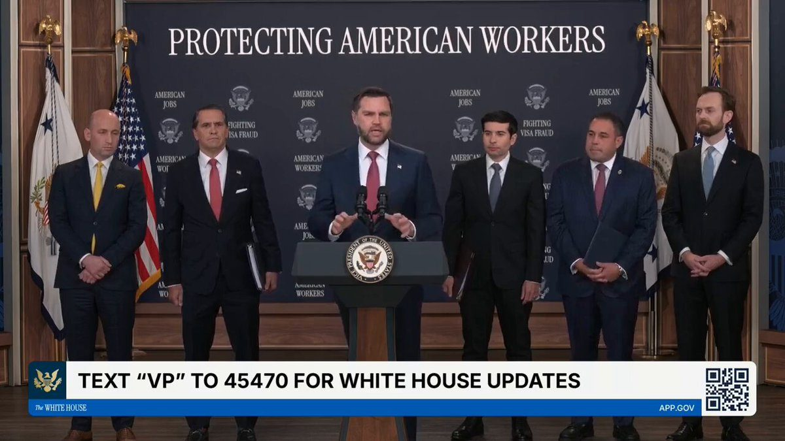
▶ Watch on XNearly one year ago, newlyweds Billy and Jenny were killed by an illegal alien driving a commercial truck. He should never have been in the United States in the first place, let alone behind the wheel.
He entered the U.S. illegally in 2022, was released under Biden, and received work authorization and a non-domiciled commercial driver’s license in California.
Billy and Jenny had been married just 16 days when their lives were tragically taken from them. Their families, along with countless other Angel Families, have been left with unimaginable loss. Loss that was preventable.
This is our why.
More than 157,000 unaccompanied alien children who were lost under the Biden Administration — including to sex trafficking, forced labor, and other atrocities — have been located.
By leaving our borders open, Democrats enabled the largest human-trafficking operation in modern history. Under the leadership of @POTUS Trump, and working together at every level of government, we will ERADICATE human trafficking.
BREAKING: The Fifth Circuit, sitting en banc, ruled that immigrants who entered the U.S. illegally can be detained during deportation proceedings without individualized bond hearings, even after living in the country for decades, reversing three orders granting their release.
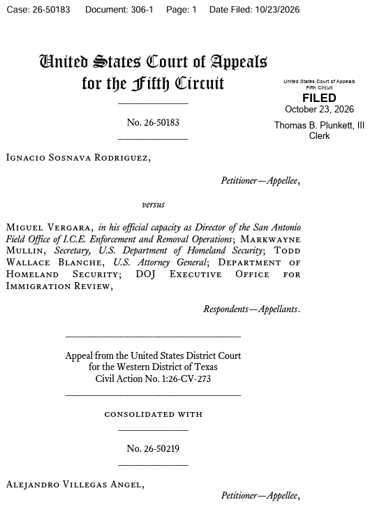
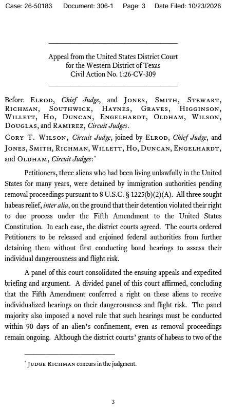
300,000+ visas revoked at the fastest pace in history.
At least 4,000 were pulled from foreign nationals who engaged in or facilitated birth tourism, an industry we’ve been investigating.
This is a great victory for our national security.
FAIR estimates illegal immigration costs U.S. taxpayers $150.7 billion annually, including expenses for U.S.-born children of undocumented immigrants.
The longterm cost to taxpayers of financially supporting just one illegal immigrant family easily exceeds one million dollars.
Virginia sanctuary county ignores 1,670 detainer requests over 2 years, House Judiciary Committee finds
#BREAKING: The Pentagon allows DHS to test a heat ray weapon for possible use at the border.
Feds bust massive marriage fraud ring that arranged 200 bogus weddings to get green cards
How President Trump Ended the Border Invasion and Restored American Sovereignty
61% of illegal alien households use at least one major welfare program.
Two former senior FBI officials, Nikki Cole Floris and Bradley Benavides, were taken into custody today on charges of allegedly lying to Congress about their involvement in the FBI’s investigations into Hunter Biden.
The charges stem from an ongoing investigation into the since-dissolved FBI Foreign Influence Task Force.
Floris led the FITF as a Deputy Assistant Director from mid-2019 through mid-2022. Benavides was the FITF Section Chief from mid-2019 through the 2020 election. Both testified that the FITF was not involved in the Hunter Biden investigations. Documentary evidence, contemporaneous communications, and witness accounts contradict their testimony.
Floris is also on record privately claiming to be “running a shadow government” during the 2020 election in her role on the FITF.
Lying to Congress by senior FBI officials strikes at the heart of our system. No one is above the law.
The FBI has already dismantled the corrupt CR-15 squad that engaged in political weaponization targeting their opponents, including President Trump.
Thanks to @TheJusticeDept @FBIKansasCity and @USAttyPirro.
-DKP🇺🇸
30+ years in office. Federally indicted.
Prosecutors allege Sen. Louise Lucas used her position to shield a 5-year marijuana enterprise involving her family—nearly $5M involved.
Thanks to @AGToddBlanche, @TheJusticeDept, FBI agents & partners.
No one is above the law.
-DKP🇺🇸
▶ Watch on XBREAKING: the federal search warrant against Ilhan Omar names her as "Ilhan Nur Said Elmi, a/k/a Ilhan Abdullahi Omar," indicating that DOJ believes she is present in the United States under a false identity!
Revealed in a scheduling order today from DDC
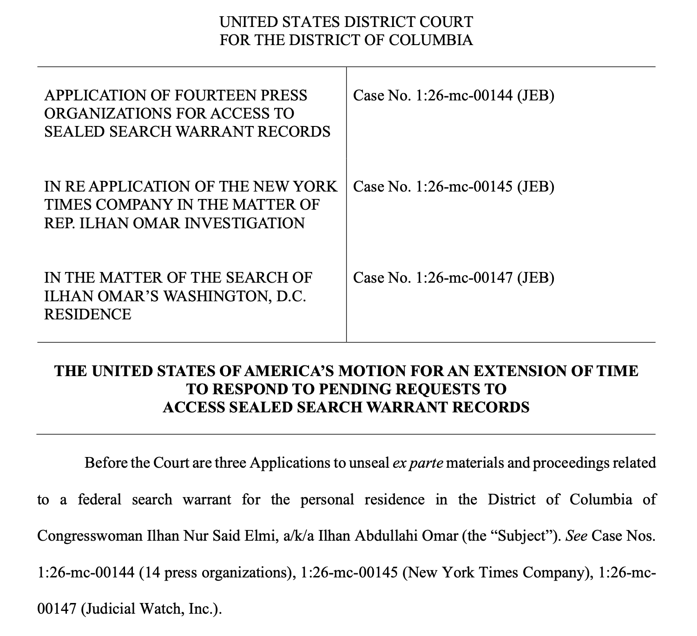
BREAKING: DOJ sends grand jury subpoenas to Philadelphia DA Larry Krasner after federal judge referred him for possible criminal investigation noting allegations of perjury and obstruction of justice, sources tell Fox News
🚨BREAKING: VA Dem Senate President Pro Tempore Louise Lucas has just been arrested by federal authorities and is in federal custody.
She is charged with drug trafficking, money laundering, fraud, and a firearms charge.
WOW
BREAKING: In a phone call captured on an FBI wiretap, now-indicted Virginia State Sen. Louise Lucas said, “This is our last chance at generational wealth…I’ve got too old not to be greedy.”
VIA: @willchamberlain
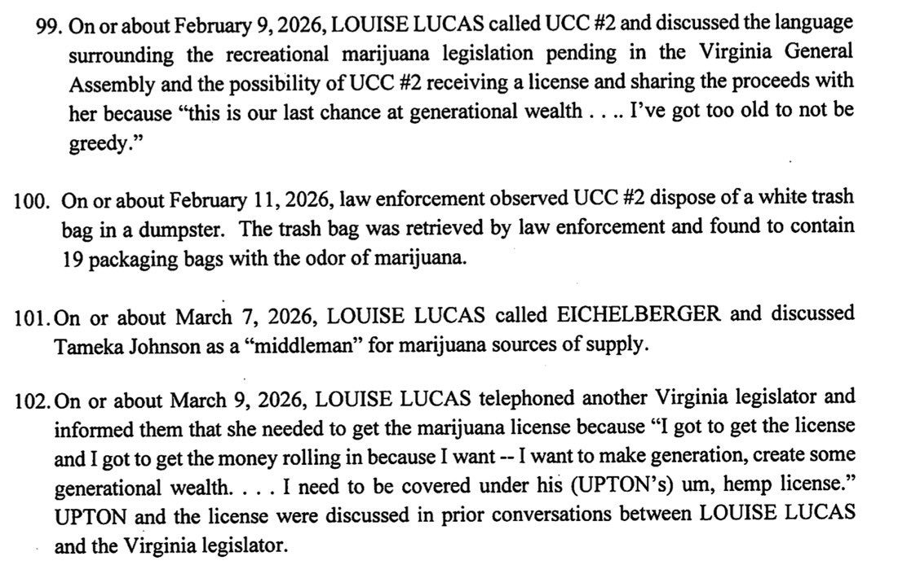
Breaking: 9th Circuit orders California to respond to Trump DOJ emergency appeal by noon tomorrow in case of alleged 20k non-citizen ballots. This is moving.
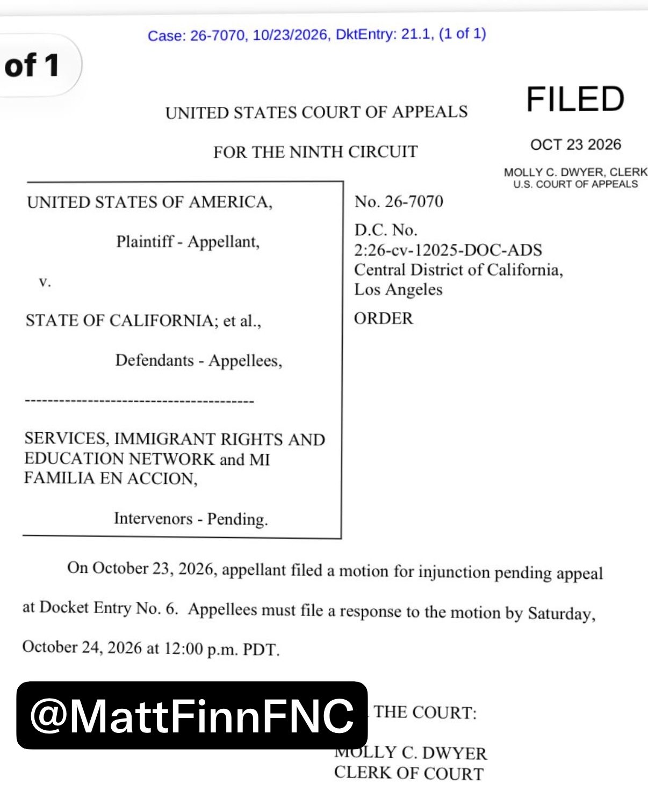
You can’t make this up. A Virginia senator asks narcs if they were cops. Of course they said no. She pays them for pounds of weed with a check.
Today’s cover: FBI officials who covered up Hunter Biden laptop charged with lying to Congress https://t.co/zGGWIZSdZY
BREAKING: Kissimmee, Florida, Mayor Jackie Espinosa arrested on charges of grand theft & organized scheme to defraud.
#BREAKING: Ex-Somaliland minister says Ilhan Omar leaked Congress meeting info to Somali leaders.
#BREAKING: Virginia state Sen. Louise Lucas (D) charged with drug trafficking, money laundering.
An audit of New York’s Medicaid program reviewing the period from January 2019 through October 2024 found that Medicaid paid approximately $2.4 billion for Social Adult Day Care (SADC) services intended to support elderly individuals in community settings. Medicaid, funded through federal, state, local, and provider tax sharing, consistently spends more per enrollee in New York than the national average, with costs estimated at 40 to 60 percent higher.
In response to significant indicators of waste, abuse, and fraud within the SADC sector, the FBI has joined an interagency working group dedicated to immediately disrupting and dismantling billion-dollar health care fraud schemes and the money laundering networks that enable them. These efforts will have a direct impact on American citizens by strengthening the integrity of the Medicaid program and ensuring that funds are used for legitimate care.
If you suspect individuals or businesses within your community are engaged in health care fraud, you are encouraged to review your insurance provider Explanation of Benefits, contact your health insurance provider, or the FBI at
🚨 BREAKING: The feds just moved to seize half a city block in Minneapolis, reportedly bought with stolen SNAP money.
Per the White House fraud task force, DOJ's new National Fraud Division filed yesterday to take back property that was fraudulently bought with food stamp dollars meant for hungry Minnesotans.
Then the speaker turned to the press in the room: "None of your outlets reported it. It took one brave kid and a camera."
That learning center was cited hundreds of times, and the legacy media sat on it for years.
Nick Shirley did their job for free. Now Trump is taking the money back, one city block at a time.
▶ Watch on XVice President JD Vance joined President Donald J. Trump and the team in the Oval Office yesterday to announce the Fraud Whistleblower Incentive Program.
Americans can now report cases of corruption in their communities through https://t.co/6noiOHI3Vm, and eligible tipsters will be given a commission if their information leads to a successful fraud conviction.
15 of 15 New York Social Adult Daycares audited yesterday showed no record of a single meal, activity, or hour of supervision — just attendance sheets.
These daycares are receiving millions from our Medicaid system and providing NOTHING in return —this is FRAUD!
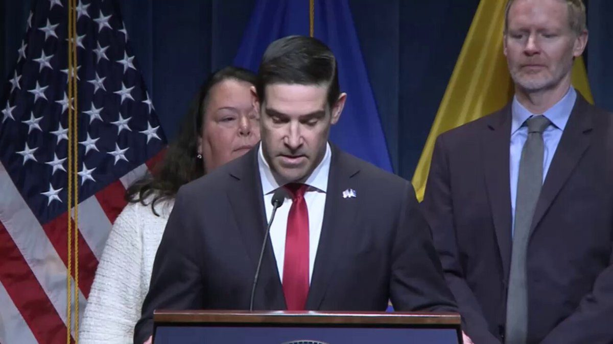
▶ Watch on X.@StephenM: "What the President is describing is a criminal conspiracy where a state knowingly aids and abets fraud that's funneled into these communities — oftentimes migrant communities — and they then use those funds to fund the Democrat Party."
▶ Watch on XWhile radical Democrats refuse to stop the misuse of taxpayer dollars, the Trump Administration has uncovered more than $260 billion in fraud and is holding criminals accountable.
Join the fight. Report fraud today at https://t.co/AF7XtSA0n7.
🚨 @AAGMcDonald announces Los Angeles Health Care Fraud Takedown results in charges against 15 defendants, including 6 medical professionals, $1.8 BILLION loss ⬇️
▶ Watch on XFeds bust $2B medical fraud rings secretly operating in California - as agents seen scaling rich doctor's mega mansion https://t.co/clQibo2kxX
Pakistani man arrested for allegedly running USPS scheme that cost $126M in losses https://t.co/8JTeQCzUQC
I took the pledge.
@POTUS and @VP’s @WHFraudTF are unleashing a war on fraud.
From stolen benefits to visa fraud, @DOLOIG is following the money and bringing the handcuffs.
You worked for it. Perps stole it. We’re coming for it.
Rapper who literally set fire to money busted as Vance fraud taskforce uncovers $42M in food stamp thefts
President Trump and JD Vance are launching a multi-million dollar fund to pay Americans who expose fraud.
JUST IN: President Trump declares the U.S. is suffering from a "horrible plague" of rampant fraud.
#BREAKING: The FBI is now raiding healthcare centers in New York as anti-fraud efforts ramp up.
Telemedicine Company Owner Sentenced to 20 Years in Prison for $46M Medicare Fraud Scheme
Treasury launched Operation Economic Outcast to tighten the noose and block every potential source of revenue that funds the IRGC and murderous Iranian regime.
Less than two months later, we have decimated every layer of Iran’s oil lifeline. Its shadow tanker fleet stands depleted. Its main oil terminal sits empty. And its offshore reserves are now exhausted. Meanwhile, ordinary Iranians continue to endure a deepening economic crisis because the regime squanders its resources on violence and terrorism abroad instead of the prosperity of its people at home.
As President Trump takes action that his predecessors long deferred, the United States is no longer managing the Iranian threat. We are ending it.
Before: tankers filled Iran’s main oil-loading terminal. After: no crude tankers in sight.
Kharg Island is now nothing more than a monument to the one thing the Iranian regime can still produce: failure.
The regime’s arrogance and belligerence continue to punish ordinary Iranians. Operation Economic Outcast is cutting off the regime’s oil lifeline, denying it resources to fund terrorism, nuclear procurement, and the lavish lifestyles of the IRGC elite.
▶ Watch on XBREAKING: Iran has drawn up detailed plans to attack the 7 major undersea Internet cables in the Gulf as soon as the US and Israel attack it again, per two senior Iranian officials to Reuters.
Iran says it would aim to prevent repairs after any attack to prolong the disruption to communications and internet connections.
"If Iran is attacked, there will be no more red lines, from undersea cables to military bases, including covert ones." The official warned US not to "play with fire," saying Iran has full access to the cables and could easily destroy them.
More than 99% of international data traffic travels through undersea cables. Iran warned this month that US-linked data centres and AI facilities across the Gulf will also be targeted.
BREAKING: US military assets are being moved rapidly into place in preparation for an expected green light from Trump to resume attacks on Iran, per a US official to Drop Site.
"CENTCOM is putting all the pieces into place to renew major combat operations," the official said.
CENTCOM chief Adm. Bradley Cooper is among the US officials pushing for renewing the bombing campaign, the official adds.
Iran's internal intelligence assessment indicates a high likelihood that large-scale bombing begins before Tuesday's Israeli elections, a senior Iranian official tells Drop Site.
WSJ: Iran’s Fleet of Shadow Tankers Has Run Out of Oil After Monthslong U.S. Blockade
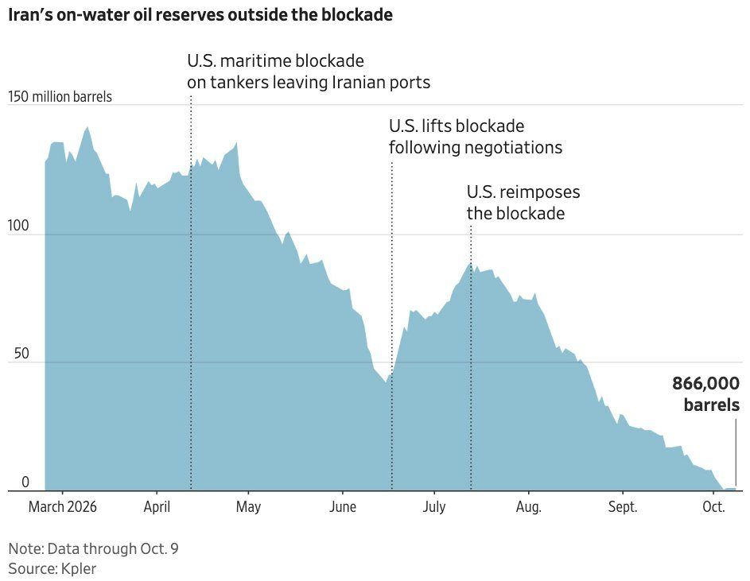
BREAKING: Netanyahu says Iran has now restarted its nuclear program and intends to destroy Israel within a short time.
"Iran has restarted its nuclear program, and it wants to destroy us within a short time," Netanyahu said an hour ago.
IDF Chief of Staff Eyal Zamir has warned that resuming the war this close to Tuesday's election will force the vote to be postponed indefinitely.
Netanyahu said on Wednesday that toppling the Iranian regime is now his directive to the IDF and Mossad.
BREAKING: Trump says US is considering resuming the war with Iran as soon as tomorrow.
"We're thinking about doing it, it may be tomorrow," Trump said minutes ago.
JUST IN: 🇺🇸🇮🇷 US intelligence warns Iranian assassination plots targeting American officials abroad have reached advanced stages.
🚨 BREAKING: President Trump just declared the globalist leftists who opened France's and Europe's borders are TREASONOUS
HE JUST WENT THERE...🔥🔥
"As we're seeing in Europe, globalist, left-wing politicians have treasonously imported millions and millions of third-world migrants who are totally incompatible with West, and they are incompatible with Western values."
"They despise everything about France and they're destroying that country. And we're not going to let that happen to this country."
The arena responded with thunderous chants of "USA!"
Trump sees France and does NOT want to let it come to America. Macron should have listened and closed the border
The only way we block this in the US is by voting red DOWN BALLOT.
🚨 IT'S OFFICIAL: President Trump announces the United States will have to WITHDRAW from European nations if they fall to the invasion and become anti-Western
"If they don't soon find their way, we will have no choice but to LEAVE." 🤯
"When we asked for help in Iran...we spend so much on NATO...they weren't there to help!"
"It's something we can NEVER forget."
America has spent decades and trillions defending Europe. Trump is done doing it without getting anything back 🔥
If Europe won't defend its own borders, why should Americans bail them out?!
STEP UP, EUROPE. Shut your borders, surge defense spending, and NEVER fall to the invaders of the 3rd world!
▶ Watch on X🌍 European countries that added the most migrants (2000–2024)
1. 🇬🇧 United Kingdom: +7.1M 2. 🇪🇸 Spain: +6.8M 3. 🇩🇪 Germany: +6.4M 4. 🇹🇷 Türkiye: +5.8M 5. 🇮🇹 Italy: +4.4M 6. 🇫🇷 France: +3.0M 7. 🇦🇹 Austria: +1.4M 8. 🇳🇱 Netherlands: +1.4M 9. 🇨🇭 Switzerland: +1.3M 10. 🇧🇪 Belgium: +1.3M 11. 🇸🇪 Sweden: +1.3M 12. 🇵🇱 Poland: +917K 13. 🇮🇪 Ireland: +840K 14. 🇳🇴 Norway: +720K 15. 🇷🇴 Romania: +521K 16. 🇵🇹 Portugal: +476K 17. 🇩🇰 Denmark: +475K 18. 🇭🇺 Hungary: +393K 19. 🇨🇿 Czechia: +386K 20. 🇫🇮 Finland: +378K
Europe's migrant population grew by 40.8 million between 2000 and 2024, up 67%. The UK, Spain and Germany together account for almost half of that increase.
Source: UN DESA
NEW - Adolf Hitler's Alpine retreat, the Eagle's Nest, was completely destroyed after a potential arson attack last night in Bavaria's Berchtesgaden, Germany.
If you want to see what's at stake, look at France.
The future doesn't have to look like this.
🇧🇪 Brussels 1955: 95% native Belgian background 2025: 21% native Belgian background
🇬🇧 London 1955: 97% native British background 2025: 36% native British background
🇳🇱 Amsterdam 1955: 98% native Dutch background 2025: 40% native Dutch background
🇩🇪 Berlin 1955: 98% native German background 2025: 57% native German background
🇦🇹 Vienna 1955: 95% native Austrian background 2025: 51% native Austrian background
🇸🇪 Stockholm 1955: 97% native Swedish background 2025: 65% native Swedish background
Dutch Minister: Young Locals Can Just Live With Their Parents, Migrants Get Houses First
Fears grow of ‘anarchy, riots and chaos’ on Britain’s streets
BREAKING: The Social Security Administration confirms to @FoxNews that it has just undertaken its largest cleanup of Social Security Numbers in the agency's 91-year history, correcting nearly 15% of all U.S. citizen SSNs (roughly 50 million out of 330 million). The changes include:
- Adding 17 million dates of death to files that previously didn't have them w/ help from State Dept. - With help from DHS, updating 25 million files that had missing citizenship information. - Correcting an additional 8.5 million records with inaccurate citizenship data.
SSNs are referenced by agencies across the federal government and in states to validate identities and prevent improper payment of tax dollars.
SOCIAL SECURITY ADMINISTRATION STATEMENT TO FOX:
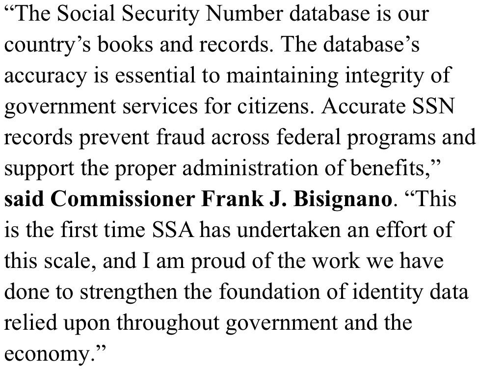
NEW: The Trump administration sued Alaska to prevent certification of its U.S. Senate election if incumbent Republican Dan Sullivan loses and votes for another candidate named Daniel Sullivan could have changed the outcome, alleging voter confusion under federal law.
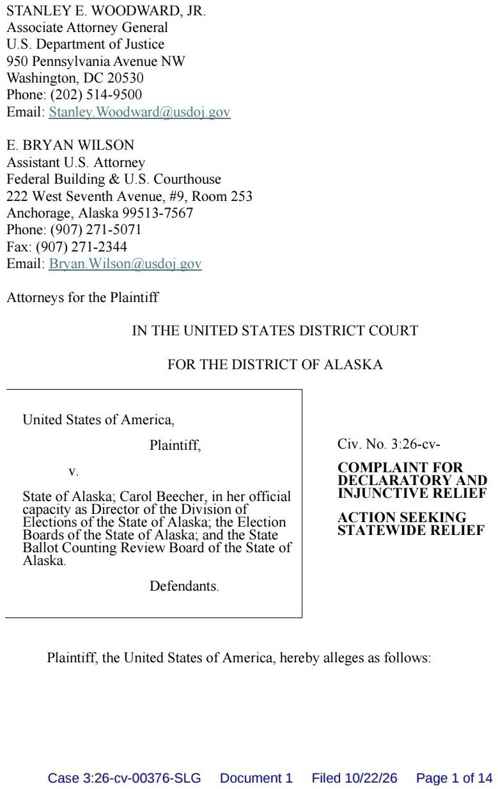
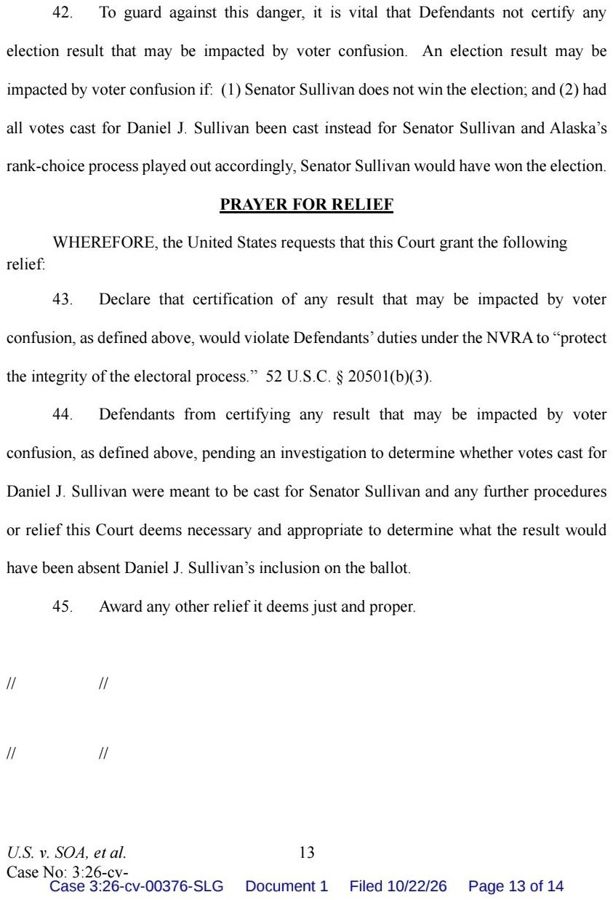
“I am proud to announce the NEWEST FLAGSHIP NATIONAL PARK in the Country, CHIRICAHUA NATIONAL PARK in ARIZONA!… We are MAKING OUR PARKS, AND ARIZONA, GREAT AGAIN!” - President DONALD J. TRUMP
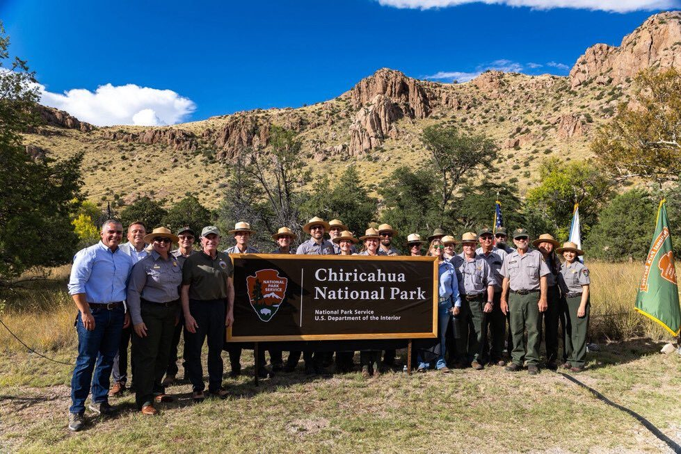
Today, Thursday, October 22, 2026, President Donald J. Trump signed into law:
H.R. 952, the "Reversionary Interest Conveyance Act," which directs the Department of the Interior to convey the reversionary interest of the United States in certain land in Sacramento, California; and
H.R. 7022, the "Mystic Alerts Act" which requires the Federal Communications Commission to establish any requirements necessary to allow commercial mobile service providers to transmit emergency alerts by satellite.
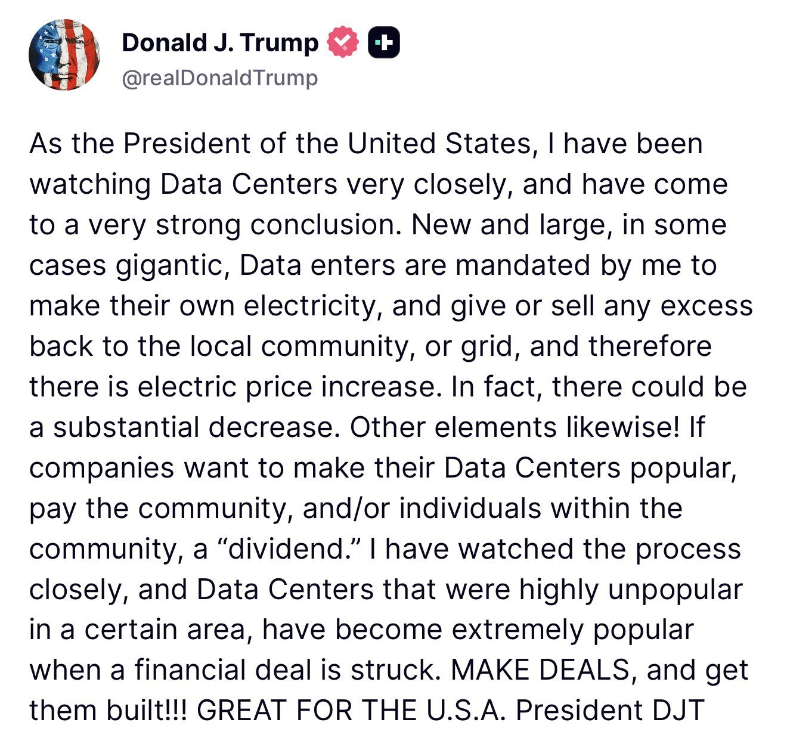
The number of people writing dissertations in the humanities has collapses, now the same thing is happening in the social sciences.
I'd wager that we will see a similar trend in psychology and other fields before long. Cuts in funding, the tight academic job market, and AI are rapidly changing the university and cratering graduate programs.
New immigrant student enrollment is collapsing in schools across California.
In the Oakland public school district, foreign arrivals have fallen so hard that two-thirds of their alien accommodation programs have closed. In LA, newcomer numbers have nearly halved under Trump.
American education needs a hard reset.
We have poured over $3 Trillion into the federal education bureaucracy only to watch reading and math scores decline.
As we look to the next 250 years, the future of learning must come from states and local communities – not Washington.
How bad is administrative bloat in higher ed?
At MIT, the “student body has grown by 8% and its faculty by 9% since the mid-1980s. By comparison, the tally of administrators jumped by 189%.”
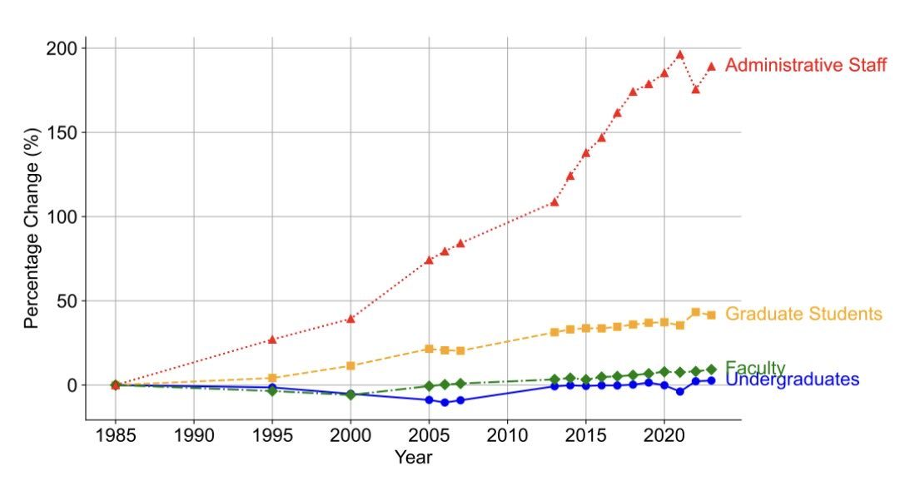
How much easier is it for black people to get into good law schools?
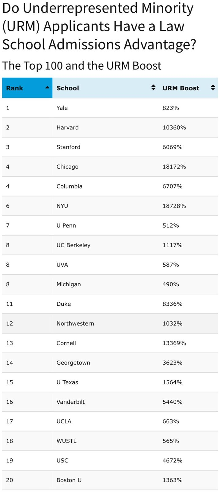
Under President Trump, your taxpayer dollars are going toward educating American citizens — NOT illegal immigrants.
"Orange County Public Schools’ 8,000-student enrollment drop included 5,000 immigrants, data shows"
BREAKING: War Secretary Pete Hegseth reveals 80 “Chinese propaganda operations” were uncovered across 30 U.S. universities.
New immigrant student enrollment has taken a nosedive in California schools
Stunning admission by California during yesterday’s Ninth Circuit hearing.
California admitted they do nothing to check the citizenship status of voters and will count the illegal ballots of noncitizens who vote. This is why we’re seeking an emergency order. We cannot allow California to dilute legal votes in the upcoming election.
Judge: You agree that if a non-citizen votes and we don’t stop it now, that vote will be counted, correct?
California: That’s absolutely correct.
This is the methodology behind our list of 20,000+ likely noncitizen registrants in California: data cleaning, identity matching, removal of citizens and deceased individuals, manual USCIS review, supervisory sign-off, and law-enforcement screening. Sworn declarations in today's TRO filing detail each step.
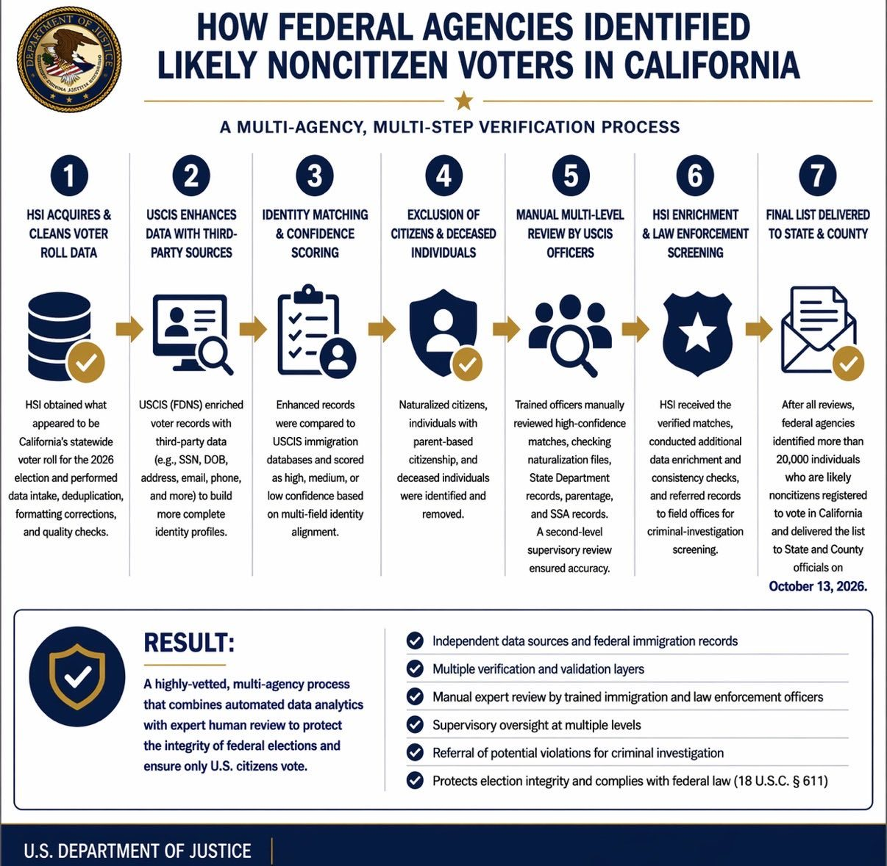
We @CivilRights have requested the voter rolls of ALL 50 states. 1/3 of the states cooperated, and 2/3 didn’t (including CA). @TheJusticeDept will continue to enforce federal laws, such as VRA, HAVA, and NVRA, to ensure free and fair elections for ALL Americans!
▶ Watch on XIt's simple. California does not verify citizenship status. We did the work for them. We obtained the registered voter list and told them who we believe are noncitizens on their rolls. Knowingly processing noncitizen ballots is a federal crime under 18 U.S.C. §§ 611 and 2. We will hold election officials accountable. No one is above the law.
NEW: Los Angeles County elections officials confirm in court filing that they have no way to verify U.S. citizenship for voters and they rely solely on a voter’s attestation when they check yes or no to being a U.S. citizen under penalty of perjury. This is part of ongoing lawsuit w/ Feds.
Muchos mensajes, análisis y comentarios como este, asegurando que las pandillas de Haití no son como las de El Salvador; que son sanguinarias, que están fuertemente armadas, que nadie ha podido vencerlas, que todas las misiones han fracasado, que estamos cayendo en una trampa, que no sabemos a lo que nos enfrentamos, que será nuestra ruina, que vamos camino a nuestro Waterloo.
Pero cuando Dios nos conceda la victoria, los mismos que hoy dicen todo eso cambiarán su discurso. Dirán que siempre fue fácil, que cualquiera podía hacerlo, que las pandillas de Haití no eran tan peligrosas como se pensaba.
En fin, nunca los hemos escuchado y no vamos a empezar ahora.
Todos los que se han enlistado son creyentes y hemos encomendado esta misión a Dios, mientras que las pandillas de Haití son satánicas y es de conocimiento público que hacen sacrificios humanos.
Dios nos concederá la victoria. El Creador del Universo está con nosotros.
Deuteronomio 28:7 “Jehová derrotará a tus enemigos que se levantaren contra ti; por un camino saldrán contra ti, y por siete caminos huirán de delante de ti”.
SECRETARY RUBIO: People need to grow up when it comes to foreign policy a little bit. I don't think it's unusual for the three most powerful, nuclear-armed nations on Earth to have their leaders communicate with each other.
▶ Watch on XJUST IN: 🇰🇵 North Korea releases "proof of life" photos of Kim Jong Un following rumors he died from a brain hemorrhage.
JUST IN: El Salvador President Nayib Bukele announces a military operation in Haiti to rescue 4 Salvadoran aviation technicians reportedly kidnapped by gangs.
JUST IN: Ecuador arrests left-wing presidential candidate Luisa González on money laundering allegations.
#BREAKING: Haiti says it's “overwhelmed” by illegals deported from the United States.
Joined @SecretaryWright yesterday at Cricket Valley Energy Center to celebrate $42 million in funding to advance the Constitution Pipeline.
This historic investment in New York will help deliver the reliable, secure energy Americans deserve while saving families across the Northeast billions of dollars.
.@SecretaryWright on the Constitution Pipeline:
“We’ve been fighting for a year to get this pipeline built. It would change the game for citizens of New York and New England in lowering electricity prices and making the grid more secure when it’s cold in the winter."
▶ Watch on XAudi is investing a historic $4 billion to build its FIRST-EVER production facility in the United States. 🇺🇸
President Trump is bringing auto manufacturing back to American soil through tariffs and pro-growth production polices. And the results are showing.
Announcing Prosperity One: a proposed 6.6 gigawatt nuclear campus in Lewis County, Kentucky
▶ Watch on XTrump Orders Data Centers to Generate Their Own Power, Provide ‘Dividend’ to Communities
TRUMP EFFECT: Eli Lilly to build $5 billion drug manufacturing plant in Virginia
“It feels really empty without him,” says 16-year-old Corey Diawara, whose father was deported in July.
His father had lived in the U.S. for 25 years and had no criminal record. Moussa Diawara says he was deported without being able to speak to his lawyer or a judge. He was eventually sent to Mali, a country a U.S. immigration judge ruled he could not be deported to.
In a statement, the Department of Homeland Security told 60 Minutes that Ghana had provided the U.S. with “diplomatic assurances for his safety.” DHS also questioned the credibility of Diawara’s arguments for fearing persecution in Mali.
The Office of Refugee Resettlement is setting the record straight. ORR consistently provides legal services to unaccompanied alien children and is providing legal services for the 1-year-old child the media has claimed is appearing in court “alone.” That is fake news.
USCRI is representing both the baby and the 17-year-old mother.
This illegal alien is @60Minutes poster child for what it claims are wrongful deportations. I pulled his file. His claimed reason for fearing Mali was that he is “gay,” just in case you’re wondering how bad the immigration fraud problem is.
The 60 Minutes sob story tonight highlighted an illegal alien and his wife and two children.
One problem. The illegal alien claimed he was a HOMOSEXUAL in order to try and dodge deportation to Mali.
You literally cannot make this up.
Today, @POTUS, joined by @FLOTUS, signed an executive order directing HHS to establish a new Women’s Health Division at @NIH to strengthen research, accelerate medical breakthroughs, and improve health outcomes for women and girls.
The order also establishes a White House Women’s Health Task Force, co-chaired by @SecKennedy and @SusieWiles47, to coordinate federal efforts to advance women’s health at every stage of life—from childhood and adolescence to reproductive health, menopause, and healthy aging.
JUST IN: RFK Jr. pushes to create a regulated marketplace for peptides, declaring “Americans are going to be buying these anyway,” regardless of restrictions.
BREAKING: The FDA just granted accelerated approval to the first immunotherapy for a leading cause of cancer death in U.S. men under 50. This therapy allows certain patients to skip radiation, chemo, and surgery altogether.
We signed a new agreement with the DOW to build a multiyear contract for the F-35, designed to reinforce our longstanding partnership and save billions in taxpayer dollars.
JUST IN: Palmer Luckey's genetically modified military dog startup, Warhound, comes out of stealth, aiming to create enhanced canines for the U.S. military.
#BREAKING: Pentagon preparing every major U.S. base to survive 90 days without outside support.
JUST IN: 🇺🇸🇷🇺 US Special Envoy Steve Witkoff to meet Russian President Putin to discuss new proposal for ending war in Ukraine.
What’s actually going on in Ukraine is that there is a massive incentive difference between the elites and the people.
The former have grown very rich off the hundreds of billions flowing to Ukraine, while the latter’s children are conscripted to die in trenches.
BREAKING: Russian President Vladimir Putin agrees to resume trilateral talks with Ukraine and the U.S. next month, a Kremlin official says.
#BREAKING: The White House blocks transfer of Patriot missiles to Ukraine, U.S. officials say.
JUST IN: 🇷🇺🇺🇸 Russia says it is ready to supply unlimited diesel to the United States.
I took about 50,000 photos through a 14" telescope last night to produce this: A hyper-detailed photo of the full moon. The fidelity of the photo was great enough to allow me to greatly enhance the color, revealing a hidden world of geological diversity.
Meghan Markle’s dad, Thomas, under investigation for ‘hundreds, if not thousands’ of child porn images: report https://t.co/auOxWiAxAv
America’s newest national park is rock solid!
Chiricahua is officially our 64th national park. Welcome to the "Wonderland of Rocks."
Federal Court case forces Health Canada to hand over its secret review of undeclared SV40 DNA in Pfizer's COVID shots
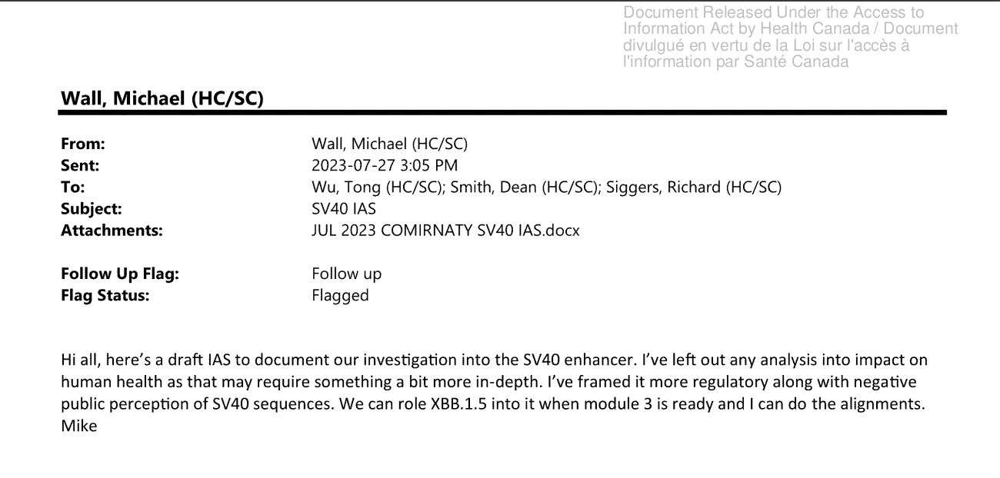
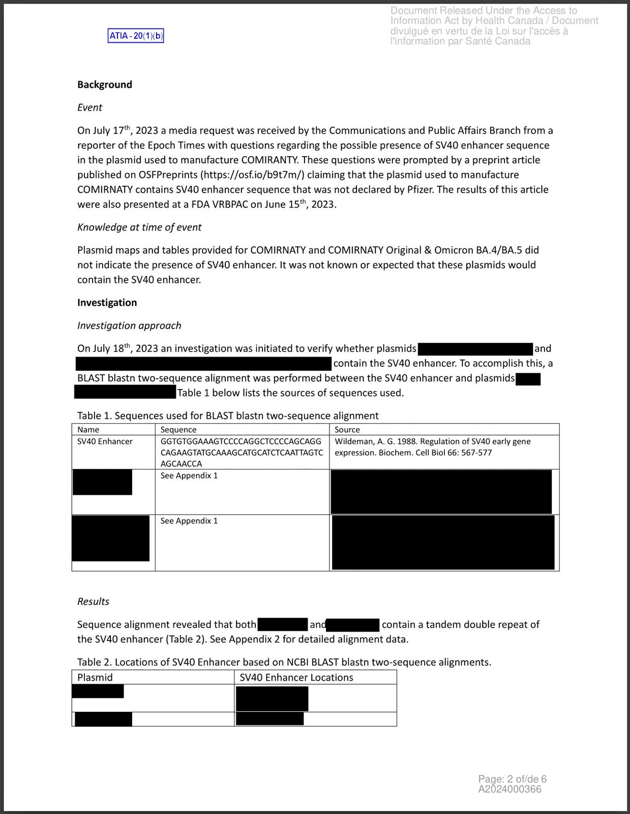
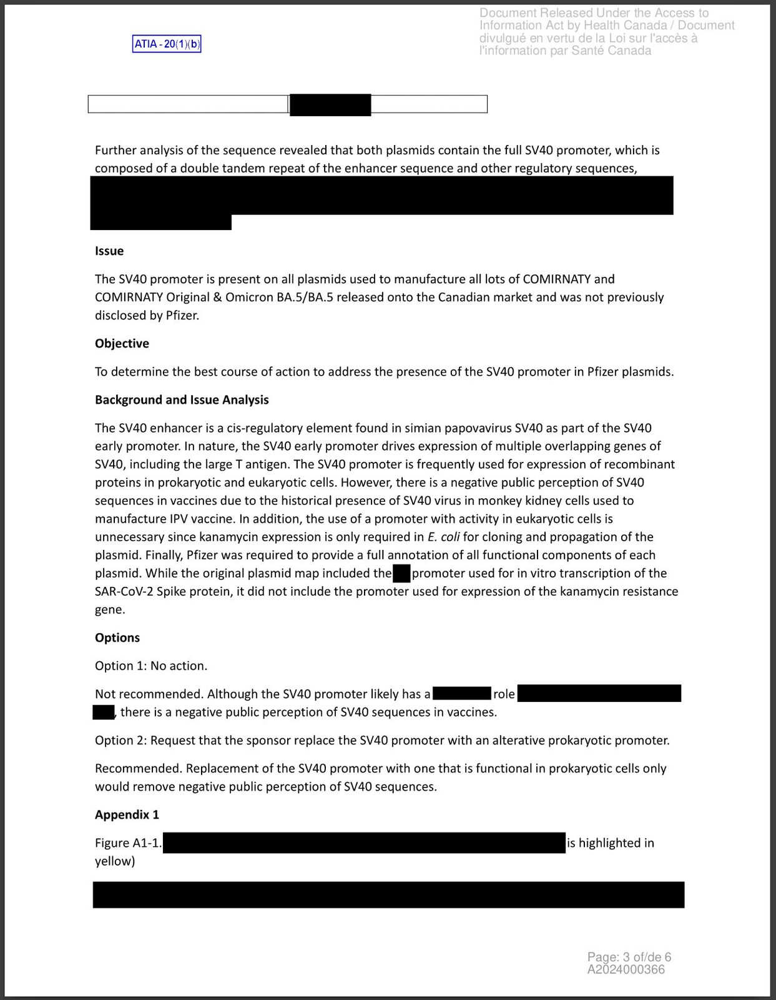
Retribution will be through success.
Stay locked in.
Cartel Commander Charged with International Cocaine and Methamphetamine Trafficking Conspiracy and Firearm Offenses
“Today’s charges demonstrate the Justice Department’s commitment toward the total elimination of drug cartels and transnational criminal organizations. Thanks to the hard work of our DEA partners and the Criminal Division prosecutors, these cartel leaders will be exposed and their organizations dismantled.” -@AAGDuva
Read more:
BREAKING: Canada is officially removing the LMIA requirement for qualifying high-wage job offers from November 3, ending the step where employers had to prove no Canadian was available for the role, per CTV.
Further Modifying the Scope of Products of Canada Subject to the Additional Duties Imposed to Offset Canadian Discrimination Against the Commerce of the United States with Respect to Motor Vehicles
To those who seek to create positive change in Cuba - now is the time.
The disappointment of failed promises, corruption, and the privileged lives of only a few; seize this opportunity to create the change you desire through a discrete partnership with the CIA.
I honestly don't think boomers and gen x understand that Millennials and Gen Z are going to witness the greatest societal collapse that the western world has ever seen